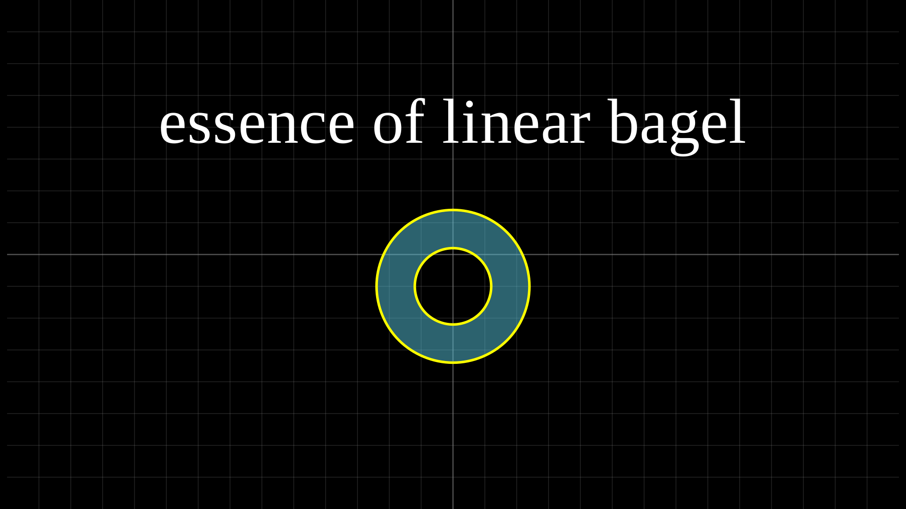
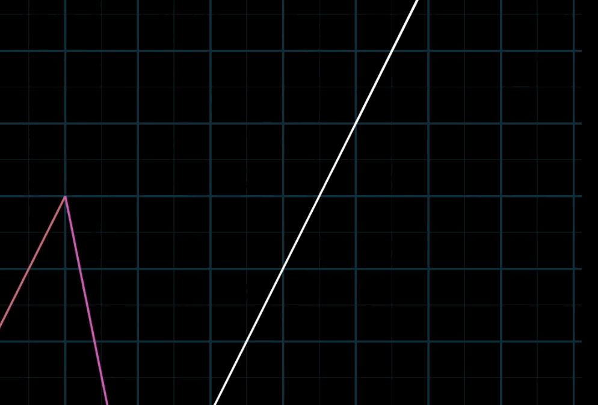
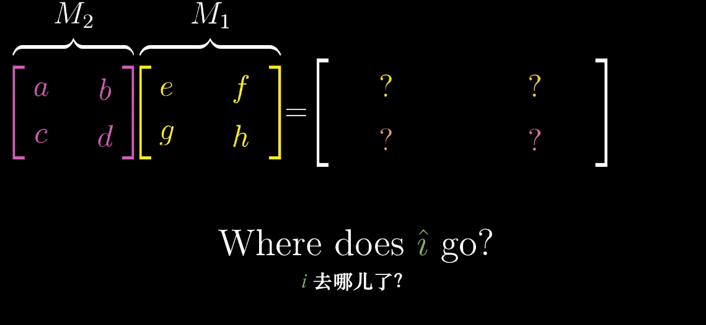
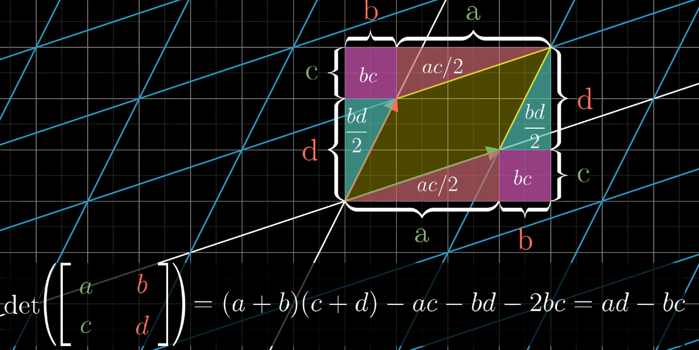
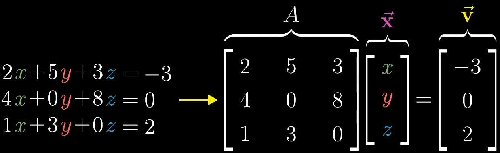
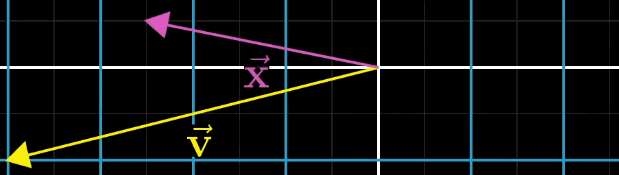

This article contains my study notes for the free online course “Essence of Linear Algebra” by the YouTube channel 3Blue1Brown. I consider it to be one of the best introductory resources on the subject. Prior to this, my understanding of matrices and equations was largely confined to rote formula manipulation. This video series fundamentally changed my perspective, inspiring me to view linear algebra through the lens of geometric transformations. Not only is this more intuitive, but it often makes problem-solving simpler! As a researcher in biology, this makes perfect sense to me—humans are more sensitive to and understand concrete, visualizable concepts (animation > graphics > numbers > abstract symbols) more quickly and deeply.
To honor the spirit of this tutorial and highlight the geometric nature of linear algebra, I will strive to explain concepts from both algebraic and geometric viewpoints wherever possible.
Due to the volume of content, these notes will be published in two parts.
Vectors, Transformations, and Matrices
1. What is a Vector?
Geometric Perspective: An arrow in space with a specific length (magnitude) and direction. A vector’s essence is unchanged by translation.
Algebraic/Coordinate Perspective: An ordered list of numbers (e.g., \([x, y]\)) that describes how to reach the tip of the arrow from its tail by scaling and adding the basis vectors of a chosen coordinate system. This defines operations like vector addition and scalar multiplication.
Computer Science Perspective: Simply an ordered list of numbers, a data structure.
💡 Key insight: The numerical representation of a vector implicitly depends on our choice of basis vectors.
2. Linear Combination, Span, and Basis
In the standard Cartesian coordinate system, we implicitly use the basis vectors \(\hat{i} = \begin{bmatrix}1\\0\end{bmatrix}\) and \(\hat{j} = \begin{bmatrix}0\\1\end{bmatrix}\). By scaling and adding \(\hat{i}\) and \(\hat{j}\), we can construct any vector in the plane.
Linear Combination: The result of scaling and adding vectors. For example, \(a\vec{v} + b\vec{w}\) is a linear combination of \(\vec{v}\) and \(\vec{w}\).
Span: The set of all possible linear combinations of a given set of vectors. It answers the question: “What are all the vectors you can reach using only vector addition and scalar multiplication?”

Geometric Outcomes for the Span of Two Vectors:
Two non-zero, non-collinear vectors: Their span is the entire 2D plane.
Two non-zero, collinear vectors: Their span is the line they lie on.
Two zero vectors: Their span is just the origin.
Linear (In)dependence:
Geometric Perspective: A set of vectors is linearly dependent if at least one vector “lies in the span” of the others, adding no new directional information. Otherwise, they are linearly independent.
Algebraic Perspective: A set of vectors \(\{\vec{v}_1, \vec{v}_2, ..., \vec{v}_n\}\) is linearly dependent if there exists a set of scalars \(\{c_1, c_2, ..., c_n\}\), NOT all zero, such that \(c_1\vec{v}_1 + c_2\vec{v}_2 + ... + c_n\vec{v}_n = \vec{0}\). This is equivalent to saying one vector can be written as a linear combination of the others.
3. Matrices as Linear Transformations
💡 Note: “Transformation” is an intuitive synonym for “function,” suggesting we can understand input-output relationships through the movement and deformation of space.
A Linear Transformation is a mapping that satisfies two key properties:
Lines remain lines: All straight lines (including diagonals) remain straight after the transformation; they do not curve.
Origin remains fixed: The origin point \((0,0)\) stays at \((0,0)\).
(Geometrically, these are equivalent to: Grid lines remain parallel and evenly spaced.)
How to Describe Linear Transformations Numerically:
The critical insight: Since any vector can be expressed as a linear combination of basis vectors, if you know where the basis vectors \(\hat{i}\) and \(\hat{j}\) land after the transformation, you can deduce where any vector lands.
Understanding Matrices:
Geometric Perspective: A matrix represents a specific linear transformation rule.
Algebraic Perspective: A matrix is an array of numbers that encodes, in coordinate form, where the basis vectors go. The columns of a \(2 \times 2\) matrix are precisely the coordinates of the transformed \(\hat{i}\) and \(\hat{j}\).
4. Matrix Multiplication as Composition
Applying two linear transformations in succession (e.g., rotation \(\mathbf{A}\), then shear \(\mathbf{B}\)) results in a new, composite linear transformation. The matrix for this new transformation is the product of the original matrices.
Geometric Perspective: Matrix multiplication corresponds to composition of linear transformations (doing one transformation, then another).
Algebraic Perspective: The computational rule \(\mathbf{B}(\mathbf{A}\vec{v}) = (\mathbf{BA})\vec{v}\) is the numerical realization of this composition, following the same order as function composition \(f(g(x))\).
💡 Note: Matrix multiplication is read from right to left.

5. Determinant
A linear transformation stretches or squishes space. The determinant measures this scaling factor.
Geometric Perspective: The absolute value of the determinant represents the factor by which areas (in 2D) or volumes (in 3D) are scaled. The sign indicates whether the orientation of space is flipped (like turning a paper over).
💡 Attention: The determinant is defined only for \(n \times n\) (square) matrices! The concept of a “volume/area scaling factor” intrinsically requires a transformation from \(\mathbb{R}^n\) to itself.
Algebraic Perspective: For a \(2 \times 2\) matrix \(\begin{bmatrix}a & b\\c & d\end{bmatrix}\), the determinant is calculated as \(ad - bc\), whose geometric meaning is the area scaling/orientation described above.

Interpreting the Determinant’s Value:
\(\det(\mathbf{A}) > 1\): Area expands, orientation preserved.
\(\det(\mathbf{A}) = 1\): Area unchanged, orientation preserved (e.g., pure rotation).
\(0 < \det(\mathbf{A}) < 1\): Area contracts, orientation preserved.
\(\det(\mathbf{A}) = 0\): Space is compressed onto a lower dimension. The transformation is non-invertible.
\(\det(\mathbf{A}) < 0\): Area is scaled, and orientation is flipped. The absolute value gives the scaling factor.
6. Inverse Matrices

Consider the linear system \(\mathbf{A}\vec{x} = \vec{v}\).

Geometric Perspective: Given a transformation \(\mathbf{A}\) and an output \(\vec{v}\), finding the input \(\vec{x}\) that was transformed into \(\vec{v}\) is equivalent to finding the inverse transformation \(\mathbf{A}^{-1}\), which maps \(\vec{v}\) back to \(\vec{x}\).
Algebraic Perspective: This inverse transformation corresponds to the inverse matrix \(\mathbf{A}^{-1}\). Solving for \(\vec{x}\) becomes the computation \(\vec{x} = \mathbf{A}^{-1}\vec{v}\).
Identity Transformation and Invertibility:
The Identity Transformation does nothing, leaving all vectors unchanged. Its matrix is \(\mathbf{I}\).
If the inverse of \(\mathbf{A}\) exists, then applying \(\mathbf{A}\) followed by \(\mathbf{A}^{-1}\) (or vice versa) results in the identity transformation: \(\mathbf{A}^{-1}\mathbf{A} = \mathbf{A}\mathbf{A}^{-1} = \mathbf{I}\).
💡 Key Condition: An inverse matrix \(\mathbf{A}^{-1}\) exists if and only if \(\det(\mathbf{A}) \neq 0\). If \(\det(\mathbf{A}) = 0\), the transformation collapses space, information is lost, and there is no unique way to reverse the process.
7. Rank and Column Space
Column Space: The span of all column vectors of a matrix \(\mathbf{A}\). Geometrically, it is the set of all possible output vectors \(\mathbf{A}\vec{x}\). It answers: *“After transformation* \(\mathbf{A}\), where can all vectors land?”
Rank: The dimension of the column space. It describes the dimensionality of the output space after the transformation.
- Example: If the output of a transformation is a line, its rank is 1. If the output is a plane, its rank is 2.
- The rank of an \(m \times n\) matrix cannot exceed \(\min(m, n)\).
A matrix is Full Rank if its rank equals its number of columns (\(n\)). This means the transformation does not collapse any dimension within the input space.
For an \(n \times n\) Square Matrix \(\mathbf{A}\), the following are equivalent:
Determinant Condition: \(\det(\mathbf{A}) \neq 0\)
Rank Condition: \(\mathbf{A}\) is full rank, i.e., \(\text{rank}(\mathbf{A}) = n\)
Invertibility Condition: \(\mathbf{A}\) is invertible (i.e., \(\mathbf{A}^{-1}\) exists)
8. Null Space
Null Space: The set of all input vectors that get mapped to the zero vector under transformation \(\mathbf{A}\): \(\{\vec{x} \mid \mathbf{A}\vec{x} = \vec{0}\}\).
Geometric Meaning: These are the vectors that are “compressed flat” or “annihilated” by the transformation. If the null space contains more than just the zero vector, the transformation is many-to-one, which is the essence of its non-invertibility when \(\det(\mathbf{A})=0\).
Reference
1. This note is a summary of the online course Essence of Linear Algebra
2. Cover image is generated using manim community edition developed by 3b1b